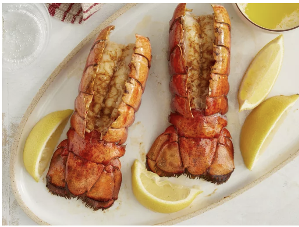

Description
This delicious lobster tail recipe cooks whole lobster tails with melted butter and paprika under the broiler for an impressive meal for two that's quick and easy to do!
Ingredients
- 2 whole lobster tails
- ½ cup butter, melted
- ½ teaspoon ground paprika
- salt and ground white pepper to taste
- 1 lemon, cut into wedges
Steps
-
Gather all ingredients.
-
Bring a large pot of lightly salted water to a boil. Add fettuccine and cook for 8 to 10 minutes or until al dente; drain.
-
Melt butter into cream in a large saucepan over low heat; add salt, pepper, and garlic salt.
-
Increase the heat to medium; stir in grated Romano and Parmesan cheese until melted and sauce has thickened.
-
Add cooked pasta to sauce and toss until thoroughly coated; serve immediately.